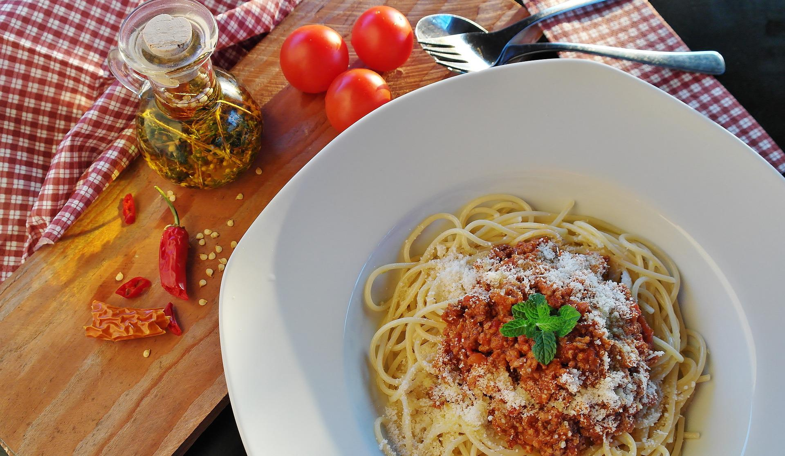

Spaghetti

- Time: 30 mins
- Serves: 6
- Difficulty: Easy
Spaghetti is a popular dish which is quite easy to make. Today I will be presenting you
the recipe for Spaghetti. Follow the instructions as closely as you can for best results
Ingredients
- 1 pound spaghetti
- 2 pounds lean ground beef
- 1 Onion, minced
- 1 (6 ounce) can tomato paste
- 2 (10.75 ounce) cans condensed tomato soup
- 2 1/2 cups of water
Directions
- Boil a large pot of lightly salted water.
Proceed to add pasta and cook for about 10 minutes.
Drain when ready.
- Add ground beef and onion to a skillet and cook on medium heat.
Stir in tomato paste and tomato soup.
Cook on medium heat for about 10 minutes.
ENJOY!